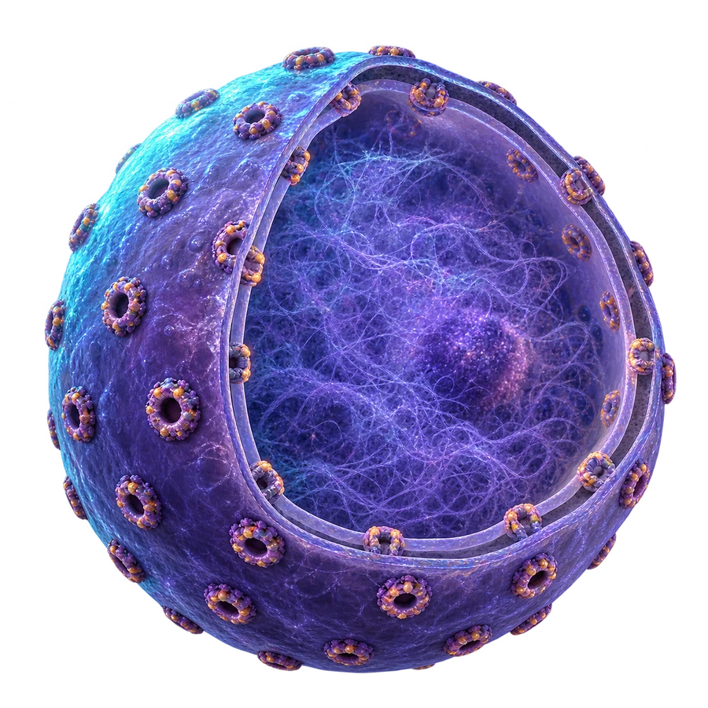
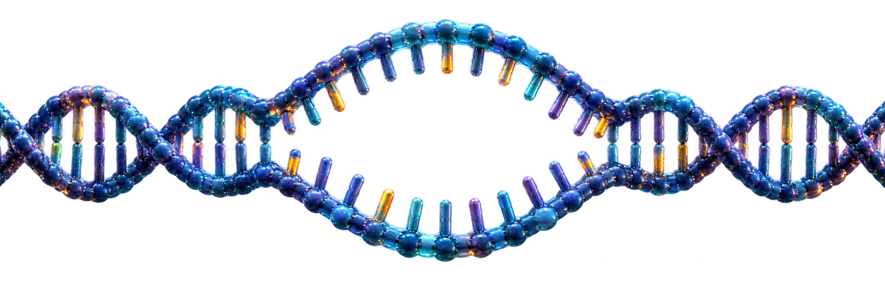
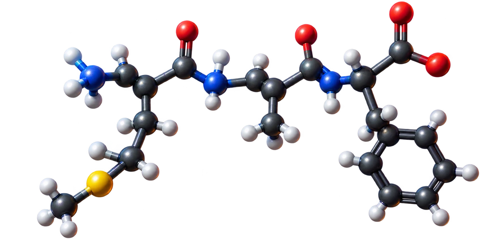

עומקמחוץ לתא
מעטפת לא מזוהה

בתוך גרעין התא

DNAגדיל התבנית
אזור השעתוק הפעיל
RNAהעותק החדש
מגש נוקלאוטידיםלחצו או גררו אל המקום המואר
מפתח ההתאמה
A↔U
T↔A
C↔G
G↔C
0 / 12
גרעין
ציטופלזמה
↔ גררו את ה־RNA דרך השער הנכון, או לחצו לפי הסדר: RNA ← שער ← ריבוזום
על ריבוזום בציטופלזמה
AUGAUG
GCUGCU
UUUUUU
UAAUAA
תת־היחידה הגדולה
תת־היחידה הקטנה
הריבוזום נקשר ל־RNA...
מאגר מטעני חומצות אמיניותאיזו חומצה אמינית מקודד AUG?
קודון 1 מתוך 4

מתיוניןאלניןפנילאלנין
קריאת תגבור לרקמה
✦ משימה הושלמה ✦פיצחנו את הקוד!החלבון הושלם — ואות החירום נקלט בתאים השכנים!
✦
מבצע הצופן הצליח • השידור פעיל
האות שוחזר — חלבון האיתות יצא לפעולה!
החלבון הקצר הוא קריאת חירום: הוא מזעיק תאי תמך ותאי חיסון סמוכים, שמפעילים מנגנוני הגנה, מסייעים בסילוק גורם הנזק ומתחילים את התאוששות הרקמה.
DNAמידע←שעתוקRNAהודעה←תרגוםחלבוןתוצר
12נוקלאוטידים4קודונים3חומצות אמיניות
שאלה 1 מתוך 3
בדיקת פענוח
היכן מתרחש השעתוק בתא איקריוטי?
✦מפענחי הקוד
✦ ניצחון במעבדה ✦תיק 07 נסגר בהצלחה!
כל הכבוד — אתם מפענחי הקוד!
, השלמת את מסלול המידע: שעתוק בגרעין, יציאת RNA ותרגום בריבוזום. חלבון האיתות שנוצר הזעיק תאי תמך ותאי חיסון סמוכים לקריאת תגבור ולהגנת הרקמה.
נקודות שנצברו0
המחשה לימודית: חלבונים אמיתיים מכילים בדרך כלל הרבה יותר משלוש חומצות אמיניות.